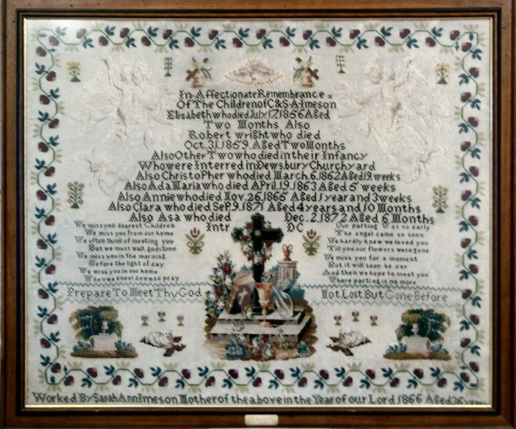

|
 |
| We miss you dearest Children | Our parting was so early | |
| We miss you from our home | The angel came so soon | |
| We often think of meeting you | We hardly knew we loved you | |
| But we must wait Gods time | Till you are flowers were gone | |
| We miss you in the morning | We miss you for a moment | |
| Before the light of day | But it will soon be over | |
| We miss you in our home | And then we hope to meet you | |
| When we kneel down to pray | Where parting is no more | |
| Prepare to Meet thy God | Not Lost But Gone Before |